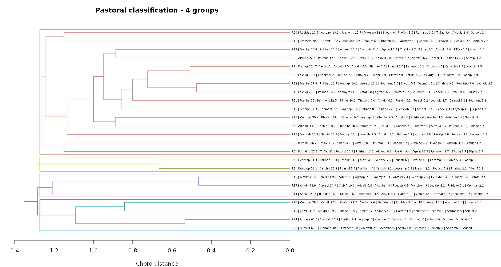
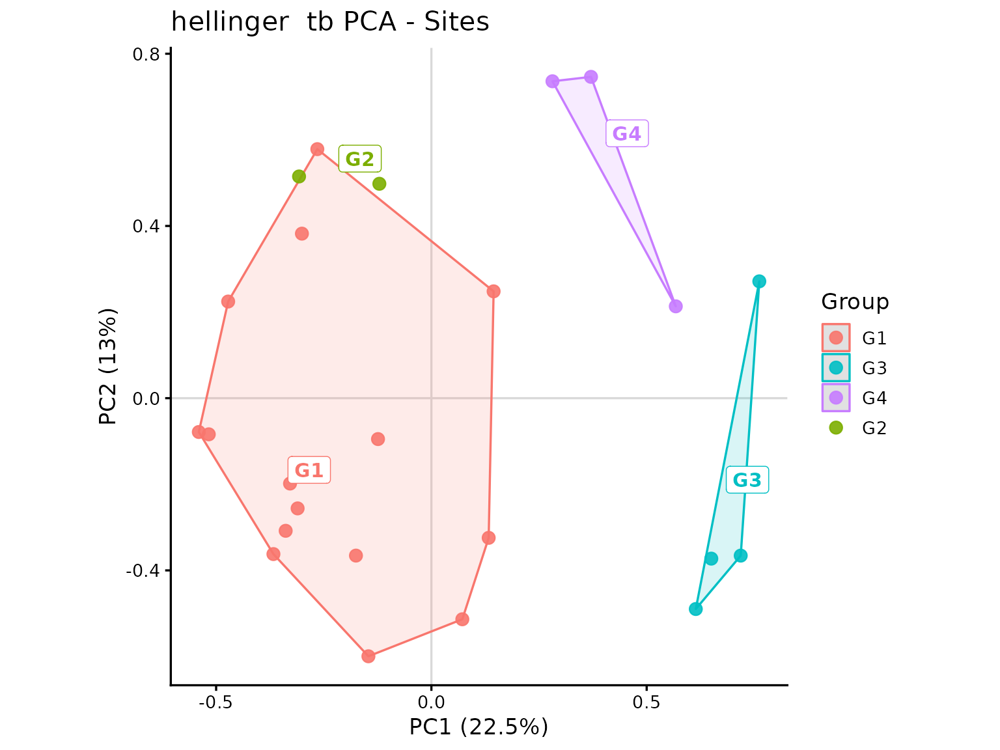
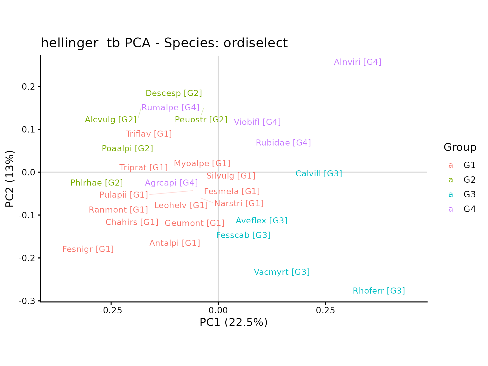

Vegetation classification: a pastoral approach
Marco Pittarello
Source:vignettes/TUTORIAL_2_-_Cluster_metodo_fitopastorale.Rmd
TUTORIAL_2_-_Cluster_metodo_fitopastorale.RmdSuppose we want to identify vegetation groups that can be interpreted from the dominant species and their relative abundances. A useful first step is to display a dendrogram together with the most abundant species in each survey. This makes it easier to see which surveys share a similar composition and to decide where to cut the dendrogram.
In this example, we calculate Species Relative Abundance (SRA), run
an agglomerative cluster analysis, and match the first ten species of
each survey to the dendrogram. After choosing a cut, we calculate mean
group composition and explore the groups using transformation-based PCA
(tb-PCA), with species labels selected by ordiselect.
1. Packages and example data
The example uses iPastoralist::data. Survey values are
frequencies of occurrence (FO), 999 identifies occasional
species, and empty cells indicate absences. We use species codes to keep
dendrogram labels compact.
Select species codes and survey columns, excluding ecological
indicator values and other ancillary information. The first column
contains the species codes, as required by
vegetation_abundance().
data_example <- as.data.frame(iPastoralist::data)
vegetation <- data_example[, c(2, 7:ncol(data_example))]
knitr::kable(head(vegetation[, seq_len(min(7L, ncol(vegetation)))]))| species.name.code | R1 | R2 | R3 | R4 | R5 | R6 |
|---|---|---|---|---|---|---|
| Achmacr | NA | NA | NA | NA | NA | NA |
| Achmill | NA | NA | NA | NA | NA | NA |
| Achmosc | NA | NA | NA | NA | NA | NA |
| Acialpi | NA | NA | NA | NA | NA | NA |
| Acolama | 999 | NA | NA | NA | NA | NA |
| Adealli | NA | 999 | NA | NA | NA | NA |
2. Species Relative Abundance
First, calculate SRA from FO. With method = "SRA_fo",
occasional species are excluded and species abundances sum to 100 within
each survey.
sra <- vegetation_abundance(
database = vegetation,
method = "SRA_fo"
)
# For subsequent analyses: rows = surveys; columns = species.
veg <- t(as.matrix(sra))| R1 | R2 | R3 | R4 | R5 | R6 | R7 | R8 | R9 | R10 | R11 | R12 | |
|---|---|---|---|---|---|---|---|---|---|---|---|---|
| Achmacr | 0 | 0 | 0 | 0 | 0 | 0 | 0 | 0 | 0.0 | 0 | 0.0 | 0.0 |
| Achmill | 0 | 0 | 0 | 0 | 0 | 0 | 0 | 0 | 6.2 | 0 | 0.0 | 11.5 |
| Achmosc | 0 | 0 | 0 | 0 | 0 | 0 | 0 | 0 | 0.0 | 0 | 0.0 | 0.0 |
| Acialpi | 0 | 0 | 0 | 0 | 0 | 0 | 0 | 0 | 0.0 | 0 | 2.5 | 2.3 |
| Acolama | 0 | 0 | 0 | 0 | 0 | 0 | 0 | 0 | 0.0 | 0 | 0.0 | 0.0 |
| Adealli | 0 | 0 | 0 | 0 | 0 | 0 | 0 | 0 | 0.0 | 0 | 0.0 | 0.0 |
If occasional species should be included, replace the abundance call
above with method = "SRA_SC.fo.occ" and
species.cover.coefficient = 4, then rerun the subsequent
steps. The coefficient of 4 corresponds to the 25 measurement points in
this dataset.
3. Cluster analysis
Now we can calculate chord distances and apply UPGMA
(average). Chord distances are obtained as Euclidean
distances between survey rows normalised to unit length.
4. Matching the first ten species to the dendrogram
To interpret the branches, extract the species of each survey ordered
by decreasing SRA, using first_ten_species(). Setting
join.dendrogram = TRUE associates each survey with its
position in the dendrogram.
first10 <- first_ten_species(
data_SRA_SC = sra,
join.dendrogram = TRUE,
cluster.hclust = clst
)
knitr::kable(first10[1:5, ])| Survey | Survey.order | V1 | V2 | V3 | V4 | V5 | V6 | V7 | V8 | V9 | V10 | V11 | V12 | V13 | V14 | V15 | V16 | V17 | V18 | V19 | V20 | V21 | V22 | V23 | V24 | V25 | V26 | V27 | V28 | V29 | V30 | V31 | V32 | V33 | V34 | V35 | V36 | V37 | V38 | V39 | V40 | V41 | V42 | V43 | V44 | V45 | V46 | V47 | V48 | V49 | V50 | V51 | V52 | V53 | V54 | V55 | V56 | V57 | V58 | V59 | V60 | V61 | V62 | V63 | V64 | V65 | V66 | V67 | V68 | V69 | V70 | V71 | V72 | V73 | V74 | V75 | V76 | V77 | V78 | V79 | V80 | V81 | V82 | V83 | V84 | V85 | V86 | V87 | V88 | V89 | V90 | V91 | V92 | V93 | V94 | V95 | V96 | V97 | V98 | V99 | V100 | V101 | V102 | V103 | V104 | V105 | V106 | V107 | V108 | V109 | V110 | V111 | V112 | V113 | V114 | V115 | V116 | V117 | V118 | V119 | V120 | V121 | V122 | V123 | V124 | V125 | V126 | V127 | V128 | V129 | V130 | V131 | V132 | V133 | V134 | V135 | V136 | V137 | V138 | V139 | V140 | V141 | V142 | V143 | V144 | V145 | V146 | V147 | V148 | V149 | V150 | V151 | V152 | |
|---|---|---|---|---|---|---|---|---|---|---|---|---|---|---|---|---|---|---|---|---|---|---|---|---|---|---|---|---|---|---|---|---|---|---|---|---|---|---|---|---|---|---|---|---|---|---|---|---|---|---|---|---|---|---|---|---|---|---|---|---|---|---|---|---|---|---|---|---|---|---|---|---|---|---|---|---|---|---|---|---|---|---|---|---|---|---|---|---|---|---|---|---|---|---|---|---|---|---|---|---|---|---|---|---|---|---|---|---|---|---|---|---|---|---|---|---|---|---|---|---|---|---|---|---|---|---|---|---|---|---|---|---|---|---|---|---|---|---|---|---|---|---|---|---|---|---|---|---|---|---|---|---|---|---|
| 16 | R23 | 1 | Rhoferr 63.9 | Junnana 30.6 | Oxaacet 2.8 | Vacmyrt 2.8 | Achmacr 0 | Achmill 0 | Achmosc 0 | Acialpi 0 | Acolama 0 | Adealli 0 | Agrcapi 0 | Ajupyra 0 | Alcalpi 0 | Alcpent 0 | Alcvulg 0 | Alnviri 0 | Angsylv 0 | Antdioi 0 | Antvuln 0 | Antalpi 0 | Araalpi 0 | Aracili 0 | Arnmont 0 | Astmino 0 | Aveflex 0 | Bislaev 0 | Botluna 0 | Calvill 0 | Camsche 0 | Capburs 0 | Caramar 0 | Carrese 0 | Cardefl 0 | Carclav 0 | Carechi 0 | Carorni 0 | Carpall 0 | Carsemp 0 | Carcarv 0 | Cennerv 0 | Cerarve 0 | Cervulg 0 | Chahirs 0 | Chebonu 0 | Coeviri 0 | Croalbi 0 | Crycris 0 | Cusepit 0 | Dapmeze 0 | Descesp 0 | Dryaffi 0 | Epialpe 0 | Epiangu 0 | Epicoll 0 | Erialpi 0 | Eupcypa 0 | Eupmini 0 | Fesovin 0 | Fesmela 0 | Fesnigr 0 | Fesscab 0 | Foualpi 0 | Gallada 0 | Galtetr 0 | Galpusi 0 | Genacau 0 | Genpurp 0 | Genramo 0 | Gersylv 0 | Geumont 0 | Geuriva 0 | Gymdryo 0 | Hielact 0 | Hievill 0 | Hiemuro 0 | Hipcomo 0 | Homalpi 0 | Junmona 0 | Lardeci 0 | Lashall 0 | Leohelv 0 | Leuvulg 0 | Lilmart 0 | Lotalpi 0 | Luzalpi 0 | Luzcamp 0 | Luzsylv 0 | Molarun 0 | Myoalpe 0 | Narstri 0 | Parlili 0 | Pedtube 0 | Peuostr 0 | Pheconn 0 | Phlrhae 0 | Phybeto 0 | Phyhemi 0 | Poaalpi 0 | Poachai 0 | Poanemo 0 | Poaprat 0 | Pollonc 0 | Potaure 0 | Potgran 0 | Prihirs 0 | Psealbi 0 | Pulapii 0 | Ranmont 0 | Rhialec 0 | Rhorose 0 | Rospend 0 | Rubidae 0 | Rumalpe 0 | Rumalpi 0 | Rumscut 0 | Saxaspe 0 | Saxrotu 0 | Saxstel 0 | Scacolu 0 | Sedanac 0 | Semarac 0 | Semgran 0 | Semmont 0 | Sendoro 0 | Senovat 0 | Sesliba 0 | Silnuta 0 | Silrupe 0 | Silvulg 0 | Solalpi 0 | Solminu 0 | Soraucu 0 | Taroffi 0 | Thafoet 0 | Thaminu 0 | Thealpi 0 | Thyserp 0 | Trialpi 0 | Tribadi 0 | Triniva 0 | Tripall 0 | Triprat 0 | Trirepe 0 | Triflav 0 | Troeuro 0 | Urtdioi 0 | Vacgaul 0 | Vacviti 0 | Verlobe 0 | Vercham 0 | Verserp 0 | Viobifl 0 |
| 17 | R24 | 2 | Rhoferr 63.6 | Fesscab 18.2 | Aveflex 9.1 | Agrcapi 3 | Arnmont 3 | Vacmyrt 3 | Achmacr 0 | Achmill 0 | Achmosc 0 | Acialpi 0 | Acolama 0 | Adealli 0 | Ajupyra 0 | Alcalpi 0 | Alcpent 0 | Alcvulg 0 | Alnviri 0 | Angsylv 0 | Antdioi 0 | Antvuln 0 | Antalpi 0 | Araalpi 0 | Aracili 0 | Astmino 0 | Bislaev 0 | Botluna 0 | Calvill 0 | Camsche 0 | Capburs 0 | Caramar 0 | Carrese 0 | Cardefl 0 | Carclav 0 | Carechi 0 | Carorni 0 | Carpall 0 | Carsemp 0 | Carcarv 0 | Cennerv 0 | Cerarve 0 | Cervulg 0 | Chahirs 0 | Chebonu 0 | Coeviri 0 | Croalbi 0 | Crycris 0 | Cusepit 0 | Dapmeze 0 | Descesp 0 | Dryaffi 0 | Epialpe 0 | Epiangu 0 | Epicoll 0 | Erialpi 0 | Eupcypa 0 | Eupmini 0 | Fesovin 0 | Fesmela 0 | Fesnigr 0 | Foualpi 0 | Gallada 0 | Galtetr 0 | Galpusi 0 | Genacau 0 | Genpurp 0 | Genramo 0 | Gersylv 0 | Geumont 0 | Geuriva 0 | Gymdryo 0 | Hielact 0 | Hievill 0 | Hiemuro 0 | Hipcomo 0 | Homalpi 0 | Junmona 0 | Junnana 0 | Lardeci 0 | Lashall 0 | Leohelv 0 | Leuvulg 0 | Lilmart 0 | Lotalpi 0 | Luzalpi 0 | Luzcamp 0 | Luzsylv 0 | Molarun 0 | Myoalpe 0 | Narstri 0 | Oxaacet 0 | Parlili 0 | Pedtube 0 | Peuostr 0 | Pheconn 0 | Phlrhae 0 | Phybeto 0 | Phyhemi 0 | Poaalpi 0 | Poachai 0 | Poanemo 0 | Poaprat 0 | Pollonc 0 | Potaure 0 | Potgran 0 | Prihirs 0 | Psealbi 0 | Pulapii 0 | Ranmont 0 | Rhialec 0 | Rhorose 0 | Rospend 0 | Rubidae 0 | Rumalpe 0 | Rumalpi 0 | Rumscut 0 | Saxaspe 0 | Saxrotu 0 | Saxstel 0 | Scacolu 0 | Sedanac 0 | Semarac 0 | Semgran 0 | Semmont 0 | Sendoro 0 | Senovat 0 | Sesliba 0 | Silnuta 0 | Silrupe 0 | Silvulg 0 | Solalpi 0 | Solminu 0 | Soraucu 0 | Taroffi 0 | Thafoet 0 | Thaminu 0 | Thealpi 0 | Thyserp 0 | Trialpi 0 | Tribadi 0 | Triniva 0 | Tripall 0 | Triprat 0 | Trirepe 0 | Triflav 0 | Troeuro 0 | Urtdioi 0 | Vacgaul 0 | Vacviti 0 | Verlobe 0 | Vercham 0 | Verserp 0 | Viobifl 0 |
| 5 | R13 | 3 | Calvill 39.6 | Alnviri 18.9 | Rubidae 18.9 | Rhoferr 17 | Gymdryo 3.8 | Galtetr 1.9 | Achmacr 0 | Achmill 0 | Achmosc 0 | Acialpi 0 | Acolama 0 | Adealli 0 | Agrcapi 0 | Ajupyra 0 | Alcalpi 0 | Alcpent 0 | Alcvulg 0 | Angsylv 0 | Antdioi 0 | Antvuln 0 | Antalpi 0 | Araalpi 0 | Aracili 0 | Arnmont 0 | Astmino 0 | Aveflex 0 | Bislaev 0 | Botluna 0 | Camsche 0 | Capburs 0 | Caramar 0 | Carrese 0 | Cardefl 0 | Carclav 0 | Carechi 0 | Carorni 0 | Carpall 0 | Carsemp 0 | Carcarv 0 | Cennerv 0 | Cerarve 0 | Cervulg 0 | Chahirs 0 | Chebonu 0 | Coeviri 0 | Croalbi 0 | Crycris 0 | Cusepit 0 | Dapmeze 0 | Descesp 0 | Dryaffi 0 | Epialpe 0 | Epiangu 0 | Epicoll 0 | Erialpi 0 | Eupcypa 0 | Eupmini 0 | Fesovin 0 | Fesmela 0 | Fesnigr 0 | Fesscab 0 | Foualpi 0 | Gallada 0 | Galpusi 0 | Genacau 0 | Genpurp 0 | Genramo 0 | Gersylv 0 | Geumont 0 | Geuriva 0 | Hielact 0 | Hievill 0 | Hiemuro 0 | Hipcomo 0 | Homalpi 0 | Junmona 0 | Junnana 0 | Lardeci 0 | Lashall 0 | Leohelv 0 | Leuvulg 0 | Lilmart 0 | Lotalpi 0 | Luzalpi 0 | Luzcamp 0 | Luzsylv 0 | Molarun 0 | Myoalpe 0 | Narstri 0 | Oxaacet 0 | Parlili 0 | Pedtube 0 | Peuostr 0 | Pheconn 0 | Phlrhae 0 | Phybeto 0 | Phyhemi 0 | Poaalpi 0 | Poachai 0 | Poanemo 0 | Poaprat 0 | Pollonc 0 | Potaure 0 | Potgran 0 | Prihirs 0 | Psealbi 0 | Pulapii 0 | Ranmont 0 | Rhialec 0 | Rhorose 0 | Rospend 0 | Rumalpe 0 | Rumalpi 0 | Rumscut 0 | Saxaspe 0 | Saxrotu 0 | Saxstel 0 | Scacolu 0 | Sedanac 0 | Semarac 0 | Semgran 0 | Semmont 0 | Sendoro 0 | Senovat 0 | Sesliba 0 | Silnuta 0 | Silrupe 0 | Silvulg 0 | Solalpi 0 | Solminu 0 | Soraucu 0 | Taroffi 0 | Thafoet 0 | Thaminu 0 | Thealpi 0 | Thyserp 0 | Trialpi 0 | Tribadi 0 | Triniva 0 | Tripall 0 | Triprat 0 | Trirepe 0 | Triflav 0 | Troeuro 0 | Urtdioi 0 | Vacgaul 0 | Vacmyrt 0 | Vacviti 0 | Verlobe 0 | Vercham 0 | Verserp 0 | Viobifl 0 |
| 8 | R16 | 4 | Vacmyrt 28.8 | Calvill 27.3 | Rhoferr 22.7 | Aveflex 7.6 | Gymdryo 3 | Rubidae 3 | Vacviti 3 | Antalpi 1.5 | Arnmont 1.5 | Junnana 1.5 | Achmacr 0 | Achmill 0 | Achmosc 0 | Acialpi 0 | Acolama 0 | Adealli 0 | Agrcapi 0 | Ajupyra 0 | Alcalpi 0 | Alcpent 0 | Alcvulg 0 | Alnviri 0 | Angsylv 0 | Antdioi 0 | Antvuln 0 | Araalpi 0 | Aracili 0 | Astmino 0 | Bislaev 0 | Botluna 0 | Camsche 0 | Capburs 0 | Caramar 0 | Carrese 0 | Cardefl 0 | Carclav 0 | Carechi 0 | Carorni 0 | Carpall 0 | Carsemp 0 | Carcarv 0 | Cennerv 0 | Cerarve 0 | Cervulg 0 | Chahirs 0 | Chebonu 0 | Coeviri 0 | Croalbi 0 | Crycris 0 | Cusepit 0 | Dapmeze 0 | Descesp 0 | Dryaffi 0 | Epialpe 0 | Epiangu 0 | Epicoll 0 | Erialpi 0 | Eupcypa 0 | Eupmini 0 | Fesovin 0 | Fesmela 0 | Fesnigr 0 | Fesscab 0 | Foualpi 0 | Gallada 0 | Galtetr 0 | Galpusi 0 | Genacau 0 | Genpurp 0 | Genramo 0 | Gersylv 0 | Geumont 0 | Geuriva 0 | Hielact 0 | Hievill 0 | Hiemuro 0 | Hipcomo 0 | Homalpi 0 | Junmona 0 | Lardeci 0 | Lashall 0 | Leohelv 0 | Leuvulg 0 | Lilmart 0 | Lotalpi 0 | Luzalpi 0 | Luzcamp 0 | Luzsylv 0 | Molarun 0 | Myoalpe 0 | Narstri 0 | Oxaacet 0 | Parlili 0 | Pedtube 0 | Peuostr 0 | Pheconn 0 | Phlrhae 0 | Phybeto 0 | Phyhemi 0 | Poaalpi 0 | Poachai 0 | Poanemo 0 | Poaprat 0 | Pollonc 0 | Potaure 0 | Potgran 0 | Prihirs 0 | Psealbi 0 | Pulapii 0 | Ranmont 0 | Rhialec 0 | Rhorose 0 | Rospend 0 | Rumalpe 0 | Rumalpi 0 | Rumscut 0 | Saxaspe 0 | Saxrotu 0 | Saxstel 0 | Scacolu 0 | Sedanac 0 | Semarac 0 | Semgran 0 | Semmont 0 | Sendoro 0 | Senovat 0 | Sesliba 0 | Silnuta 0 | Silrupe 0 | Silvulg 0 | Solalpi 0 | Solminu 0 | Soraucu 0 | Taroffi 0 | Thafoet 0 | Thaminu 0 | Thealpi 0 | Thyserp 0 | Trialpi 0 | Tribadi 0 | Triniva 0 | Tripall 0 | Triprat 0 | Trirepe 0 | Triflav 0 | Troeuro 0 | Urtdioi 0 | Vacgaul 0 | Verlobe 0 | Vercham 0 | Verserp 0 | Viobifl 0 |
| 6 | R14 | 5 | Adealli 21.6 | Rubidae 16.2 | Urtdioi 16.2 | Rumalpe 13.5 | Alnviri 8.1 | Galtetr 8.1 | Viobifl 5.4 | Achmacr 2.7 | Acolama 2.7 | Fesnigr 2.7 | Saxrotu 2.7 | Achmill 0 | Achmosc 0 | Acialpi 0 | Agrcapi 0 | Ajupyra 0 | Alcalpi 0 | Alcpent 0 | Alcvulg 0 | Angsylv 0 | Antdioi 0 | Antvuln 0 | Antalpi 0 | Araalpi 0 | Aracili 0 | Arnmont 0 | Astmino 0 | Aveflex 0 | Bislaev 0 | Botluna 0 | Calvill 0 | Camsche 0 | Capburs 0 | Caramar 0 | Carrese 0 | Cardefl 0 | Carclav 0 | Carechi 0 | Carorni 0 | Carpall 0 | Carsemp 0 | Carcarv 0 | Cennerv 0 | Cerarve 0 | Cervulg 0 | Chahirs 0 | Chebonu 0 | Coeviri 0 | Croalbi 0 | Crycris 0 | Cusepit 0 | Dapmeze 0 | Descesp 0 | Dryaffi 0 | Epialpe 0 | Epiangu 0 | Epicoll 0 | Erialpi 0 | Eupcypa 0 | Eupmini 0 | Fesovin 0 | Fesmela 0 | Fesscab 0 | Foualpi 0 | Gallada 0 | Galpusi 0 | Genacau 0 | Genpurp 0 | Genramo 0 | Gersylv 0 | Geumont 0 | Geuriva 0 | Gymdryo 0 | Hielact 0 | Hievill 0 | Hiemuro 0 | Hipcomo 0 | Homalpi 0 | Junmona 0 | Junnana 0 | Lardeci 0 | Lashall 0 | Leohelv 0 | Leuvulg 0 | Lilmart 0 | Lotalpi 0 | Luzalpi 0 | Luzcamp 0 | Luzsylv 0 | Molarun 0 | Myoalpe 0 | Narstri 0 | Oxaacet 0 | Parlili 0 | Pedtube 0 | Peuostr 0 | Pheconn 0 | Phlrhae 0 | Phybeto 0 | Phyhemi 0 | Poaalpi 0 | Poachai 0 | Poanemo 0 | Poaprat 0 | Pollonc 0 | Potaure 0 | Potgran 0 | Prihirs 0 | Psealbi 0 | Pulapii 0 | Ranmont 0 | Rhialec 0 | Rhorose 0 | Rhoferr 0 | Rospend 0 | Rumalpi 0 | Rumscut 0 | Saxaspe 0 | Saxstel 0 | Scacolu 0 | Sedanac 0 | Semarac 0 | Semgran 0 | Semmont 0 | Sendoro 0 | Senovat 0 | Sesliba 0 | Silnuta 0 | Silrupe 0 | Silvulg 0 | Solalpi 0 | Solminu 0 | Soraucu 0 | Taroffi 0 | Thafoet 0 | Thaminu 0 | Thealpi 0 | Thyserp 0 | Trialpi 0 | Tribadi 0 | Triniva 0 | Tripall 0 | Triprat 0 | Trirepe 0 | Triflav 0 | Troeuro 0 | Vacgaul 0 | Vacmyrt 0 | Vacviti 0 | Verlobe 0 | Vercham 0 | Verserp 0 |
Each species entry reports its code followed by its SRA. The table already helps identify changes in the dominant species along the dendrogram.
We can also display these species directly beside the survey labels.
The denspe() function creates labels containing the survey
identifier and the selected number of ranked species. Here we show all
ten; set n_species_labels to 4 or 5 for a more compact
figure.
n_species_labels <- 10
db_labels <- denspe(
nspe = n_species_labels,
SpeAbund = first10,
dbClust = veg
)
# Keep the original clustering and change only the displayed labels.
stopifnot(identical(unname(as.matrix(db_labels)), unname(veg)))
clst_labels <- clst
clst_labels$labels <- rownames(db_labels)[
match(clst$labels, rownames(veg))
]
dend_labels <- as.dendrogram(clst_labels)
label_cex <- 0.5
dend_labels <- dendextend::set(dend_labels, "labels_cex", label_cex)
# Reserve enough space on the right for the species labels.
par(mfrow = c(1, 1), mar = c(4, 2, 3, 30))
plot(
dend_labels,
horiz = TRUE,
main = "Dendrogram with the ten most abundant species",
xlab = "Chord distance"
)From this view, it is easier to recognise groups sharing the same dominant species and to see whether subdivisions correspond to changes in their relative abundances. Inspect both species identities and SRA: surveys may share the same species but differ considerably in dominance. Ranks with an SRA of zero do not represent species present in that survey.
The original cluster object clst is retained for every
subsequent analysis. Adding species labels does not change distances,
branch structure, or group membership.
5. Choosing where to cut the dendrogram
The cut should produce groups that can be interpreted in terms of vegetation composition and the purpose of the pastoral classification. The labelled dendrogram provides the main basis for this interpretation. Fusion levels and silhouettes can support the choice by suggesting alternative numbers of groups to inspect.
For example, compare mean silhouette widths for 2 to 10 groups, using the same distance matrix as the cluster analysis. Here, automatic silhouette selection excludes partitions with fewer than two surveys in any group.
k_values <- 2:10
silhouette_results <- sapply(k_values, function(k) {
gruppi <- cutree(clst, k = k)
sil <- cluster::silhouette(
gruppi,
d
)
mean(sil[, "sil_width"])
})
best_k <- k_values[which.max(silhouette_results)]
best_k
#> [1] 7
par(mfrow = c(1, 1), mar = c(4, 2, 3, 1))
plot(
k_values,
silhouette_results,
type = "b",
pch = 19,
xlab = "Numero di gruppi (k)",
ylab = "Average silhouette width"
)
abline(
v = best_k,
lty = 2
)Another method is the so called maxFusionLevel() (see
Borcard et al., 2018):
fusion <- iPastoralist::maxFusionLevel(clst)
fusion
fusion$n.clustSuppose we decide to examine four groups after reading the labelled
dendrogram. We can set a custom cut, use best_k, or select
the number suggested by maxFusionLevel(). A custom cut is
an illustrative choice, not a claim that four groups are optimal for
this dataset.
n.cluster <- 4Highlight the selected groups on the same dendrogram with species labels. We can now inspect which dominant species characterise each group and whether the cut separates meaningful vegetation units.
# Match branch colours to the group numbers returned by cutree().
membership <- stats::cutree(clst, k = n.cluster)
palette <- scales::hue_pal()(n.cluster)
groups_in_dendrogram_order <- unique(membership[clst$order])
branch_colours <- palette[groups_in_dendrogram_order]
dend_selected <- dendextend::color_branches(
dend_labels,
k = n.cluster,
col = branch_colours
)
par(mfrow = c(1, 1), mar = c(4, 2, 3, 30))
plot(
dend_selected,
horiz = TRUE,
main = paste("Pastoral classification -", n.cluster, "groups"),
xlab = "Chord distance"
)
dendextend::rect.dendrogram(
dend_selected,
k = n.cluster,
horiz = TRUE,
border = branch_colours,
lty = 1,
lwd = 1.2
)
6. Extracting groups and calculating mean composition
Once the cut has been chosen, extract the group of each survey using
cutree(). Align group membership with the rows of
veg before calculating summaries or running the
ordination.
groups.hclust <- stats::cutree(clst, k = n.cluster)
groups <- data.frame(
stand = names(groups.hclust),
group = paste0("G", groups.hclust),
stringsAsFactors = FALSE
)
stopifnot(
!anyDuplicated(groups$stand),
setequal(rownames(veg), as.character(groups$stand))
)
groups <- groups[
match(rownames(veg), as.character(groups$stand)),
c("stand", "group"),
drop = FALSE
]
rownames(groups) <- NULL
groups$group <- factor(groups$group, levels = paste0("G", seq_len(n.cluster)))
knitr::kable(groups)| stand | group |
|---|---|
| R1 | G1 |
| R2 | G2 |
| R3 | G1 |
| R4 | G2 |
| R5 | G1 |
| R6 | G1 |
| R7 | G1 |
| R8 | G1 |
| R9 | G1 |
| R10 | G1 |
| R11 | G1 |
| R12 | G1 |
| R13 | G3 |
| R14 | G4 |
| R15 | G1 |
| R16 | G3 |
| R17 | G4 |
| R18 | G1 |
| R19 | G4 |
| R20 | G1 |
| R21 | G1 |
| R22 | G1 |
| R23 | G3 |
| R24 | G3 |
table(groups$group)
#>
#> G1 G2 G3 G4
#> 15 2 4 3Always inspect group sizes, especially after a custom cut. The
min_group_size constraint above applies only to automatic
selection by silhouette.
To describe the groups, calculate the mean SRA of each species using
clustGroupAggregate2(). The group identifier must be the
first column. Zeros are included when averaging surveys where a species
is absent.
The simplified table lists species in decreasing order of mean SRA within each group, providing a concise description of the vegetation units identified from the dendrogram.
db_aggregate <- data.frame(
group = groups$group,
as.data.frame(veg, check.names = FALSE),
check.names = FALSE
)
aggregate_groups <- clustGroupAggregate2(db_aggregate)
knitr::kable(head(aggregate_groups$table, 10), digits = 1)| G1_species | G1_abundance | G2_species | G2_abundance | G3_species | G3_abundance | G4_species | G4_abundance |
|---|---|---|---|---|---|---|---|
| Fesnigr | 13.1 | Descesp | 42.7 | Rhoferr | 41.8 | Alnviri | 34.1 |
| Phlrhae | 8.1 | Carclav | 11.1 | Calvill | 16.7 | Adealli | 9.3 |
| Agrcapi | 6.3 | Phlrhae | 9.3 | Vacmyrt | 8.6 | Agrcapi | 7.3 |
| Triflav | 5.5 | Fesnigr | 8.2 | Junnana | 8.0 | Rubidae | 6.1 |
| Chahirs | 4.4 | Poaalpi | 5.9 | Rubidae | 5.5 | Urtdioi | 5.4 |
| Antalpi | 4.1 | Alcvulg | 4.5 | Alnviri | 4.7 | Viobifl | 5.3 |
| Alcvulg | 4.1 | Peuostr | 4.1 | Fesscab | 4.5 | Rumalpe | 5.3 |
| Rumalpe | 3.7 | Verlobe | 3.7 | Aveflex | 4.2 | Calvill | 4.0 |
| Vacmyrt | 3.4 | Rumalpe | 2.2 | Gymdryo | 1.7 | Rhoferr | 3.2 |
| Poaalpi | 3.2 | Caramar | 1.5 | Arnmont | 1.1 | Vacmyrt | 3.1 |
head(aggregate_groups$df.long)
#> # A tibble: 6 × 3
#> group species abundance
#> <chr> <chr> <dbl>
#> 1 G1 Fesnigr 13.1
#> 2 G1 Phlrhae 8.09
#> 3 G1 Agrcapi 6.31
#> 4 G1 Triflav 5.49
#> 5 G1 Chahirs 4.38
#> 6 G1 Antalpi 4.07
aggregate_groups$df.wide
#> # A tibble: 4 × 153
#> group Achmacr Achmill Achmosc Acialpi Acolama Adealli Agrcapi Ajupyra Alcalpi
#> <chr> <dbl> <dbl> <dbl> <dbl> <dbl> <dbl> <dbl> <dbl> <dbl>
#> 1 G1 0 1.18 0 0.322 0 0 6.31 0 0
#> 2 G2 0 0 0 0 0 0 0.746 0 0
#> 3 G3 0 0 0 0 0 0 0.758 0 0
#> 4 G4 0.901 0 0 0 0.901 9.33 7.35 0 0
#> # ℹ 143 more variables: Alcpent <dbl>, Alcvulg <dbl>, Alnviri <dbl>,
#> # Angsylv <dbl>, Antdioi <dbl>, Antvuln <dbl>, Antalpi <dbl>, Araalpi <dbl>,
#> # Aracili <dbl>, Arnmont <dbl>, Astmino <dbl>, Aveflex <dbl>, Bislaev <dbl>,
#> # Botluna <dbl>, Calvill <dbl>, Camsche <dbl>, Capburs <dbl>, Caramar <dbl>,
#> # Carrese <dbl>, Cardefl <dbl>, Carclav <dbl>, Carechi <dbl>, Carorni <dbl>,
#> # Carpall <dbl>, Carsemp <dbl>, Carcarv <dbl>, Cennerv <dbl>, Cerarve <dbl>,
#> # Cervulg <dbl>, Chahirs <dbl>, Chebonu <dbl>, Coeviri <dbl>, …7. Exploring the groups with tb-PCA and ordiselect
We can now explore the selected groups using a PCA of Hellinger-transformed SRA values. Groups are overlaid on the ordination; they do not determine the PCA axes.
To keep the species plot readable, use
species = "ordiselect" in tb_pca_plot(). This
calls goeveg::ordiselect() to select species according to
abundance and fit to the displayed axes:
-
ablim = 0.3retains the most abundant 30% of species; -
fitlim = 0.8retains the 80% of species with the best fit to the axes; -
freq = FALSEuses abundance rather than occurrence frequency.
Species must meet both selection criteria. In
tb_pca_plot(), ordiselect() receives the
transformed matrix used for the PCA. The abundance threshold is a
proportion of species, not a cumulative percentage of total SRA.
set.seed(123)
pca <- tb_pca_plot(
veg = veg,
groups = groups,
transformation = "hellinger", # alternative: "chord"
axes = c(1, 2),
area = "hull", # "hull", "ellipse", or "none"
species = "ordiselect",
ablim = 0.3,
fitlim = 0.8,
freq = FALSE,
label_groups = TRUE,
segment.alpha_labelSpe = 0.3,
segment.size_labelSpe = 0.3
)
#> [1] "28 species selected (30.8% of total number of species)."
#> [1] "All species selected which belong to the 30% most abundant species and to the 80% of species with the highest absolute axis scores."
pca$plot_sites
pca$plot_species
The survey plot shows how groups are distributed in the ordination
plane. The species plot helps interpret the main compositional
gradients. For ordiselect, the species colour identifies
the group with the highest mean SRA; this is a descriptive assignment,
not a test of indicator value.
Convex hulls describe the distribution of surveys and are not confidence intervals. Interpret overlap or separation alongside the variance explained by the axes and the group composition tables.
pca$variance
#> PC1 PC2 PC3 PC4 PC5 PC6 PC7 PC8
#> 22.476597 13.005802 9.591037 8.420782 6.142118 5.022319 4.796562 4.327911
#> PC9 PC10 PC11 PC12 PC13 PC14 PC15 PC16
#> 3.722181 3.389445 2.842252 2.515764 2.322194 2.037121 1.909219 1.699734
#> PC17 PC18 PC19 PC20 PC21 PC22 PC23
#> 1.409381 1.108072 0.914318 0.755615 0.665978 0.522745 0.402852
head(pca$sites)
#> stand x y group
#> R1 R1 -0.1462875 -0.59947043 G1
#> R2 R2 -0.1208754 0.49795477 G2
#> R3 R3 -0.2649394 0.57840480 G1
#> R4 R4 -0.3074023 0.51494749 G2
#> R5 R5 -0.5170555 -0.08394836 G1
#> R6 R6 -0.1240123 -0.09499077 G1
head(pca$species)
#> species x y group
#> Agrcapi Agrcapi -0.05662518 -0.04166251 G4
#> Alcvulg Alcvulg -0.17951134 0.15199803 G2
#> Alnviri Alnviri 0.25968378 0.24511778 G4
#> Antalpi Antalpi -0.12669237 -0.18129291 G1
#> Aveflex Aveflex 0.07605068 -0.09634260 G3
#> Calvill Calvill 0.25930058 0.01318816 G3
pca$selected_species
#> [1] "Agrcapi" "Alcvulg" "Alnviri" "Antalpi" "Aveflex" "Calvill" "Chahirs"
#> [8] "Descesp" "Fesmela" "Fesnigr" "Fesscab" "Geumont" "Leohelv" "Myoalpe"
#> [15] "Narstri" "Peuostr" "Phlrhae" "Poaalpi" "Pulapii" "Ranmont" "Rhoferr"
#> [22] "Rubidae" "Rumalpe" "Silvulg" "Triprat" "Triflav" "Vacmyrt" "Viobifl"8. Optional extension: Indicator Species Analysis
IndVal can also be applied to the selected groups to identify species
associated with individual vegetation units. This complements the
description based on dominant species and the exploratory species
selection provided by ordiselect.
The following optional chunk applies IndVal.g to SRA
values, accounting for unequal group sizes. Setting
duleg = TRUE limits the analysis to individual groups.
Adapt the permutation design if surveys are repeated or arranged in
blocks.
set.seed(123)
indval <- indicspecies::multipatt(
x = veg,
cluster = groups$group,
func = "IndVal.g",
duleg = TRUE,
control = permute::how(nperm = 9999)
)
summary(indval, alpha = 0.05, indvalcomp = TRUE)The statistic returned by multipatt() is the square root
of IndVal. Its summary uses unadjusted p-values. Since groups were
derived from the same species matrix, this analysis characterises the
classification and does not provide an independent validation.
If desired, display species selected by IndVal in a separate tb-PCA figure, keeping the same surveys, groups, transformation, and axes.
pca_indval <- tb_pca_plot(
veg = veg,
groups = groups,
transformation = "hellinger",
axes = c(1, 2),
area = "hull",
species = "indval",
indval = indval,
alpha = 0.05,
label_groups = TRUE
)
pca_indval$plot_sites
pca_indval$plot_species9. Optional export
Run the following chunk interactively to save the species table, classification, group composition, and ordination results.
output_dir <- "risultati_pastoralista"
dir.create(output_dir, recursive = TRUE, showWarnings = FALSE)
write.csv2(
first10_table,
file.path(output_dir, "first_ten_species.csv"),
row.names = FALSE
)
write.csv2(groups, file.path(output_dir, "gruppi.csv"), row.names = FALSE)
write.csv2(
silhouette_results,
file.path(output_dir, "silhouette.csv"),
row.names = FALSE
)
write.csv2(
aggregate_groups$table,
file.path(output_dir, "composizione_media.csv"),
row.names = FALSE
)
saveRDS(
list(
veg = veg,
distance = d,
clustering = clst,
first10 = first10_table,
selection_method = selection_method,
n.cluster = n.cluster,
silhouette = silhouette_results,
groups = groups,
aggregate = aggregate_groups,
pca = pca,
session = sessionInfo()
),
file.path(output_dir, "analisi_pastoralista.rds")
)